Tarjetas
Aplicación corporativa en tarjetas de presentación.
Información organizada de aplicaciones.
Aplicación corporativa en tarjetas de presentación.
Identidad aplicada al contacto directo con el producto.
Vestimenta coherente con los colores y personalidad de la marca.
Material visual para comunicación y promoción.
Presencia digital consistente en contenidos y perfiles.
Experiencia digital alineada con la identidad de Ka'tée Cito.
Ejemplos visuales organizados según su uso corporativo.
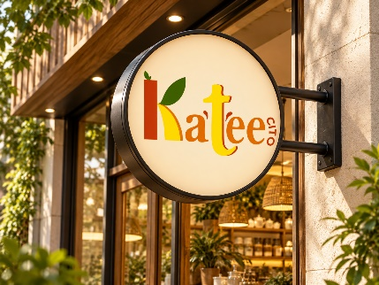
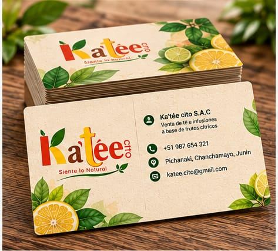
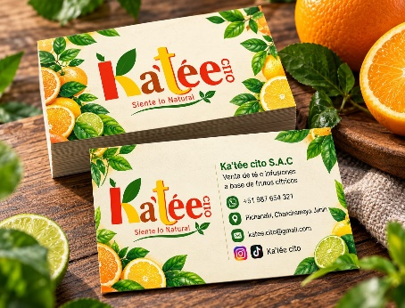
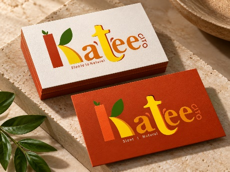
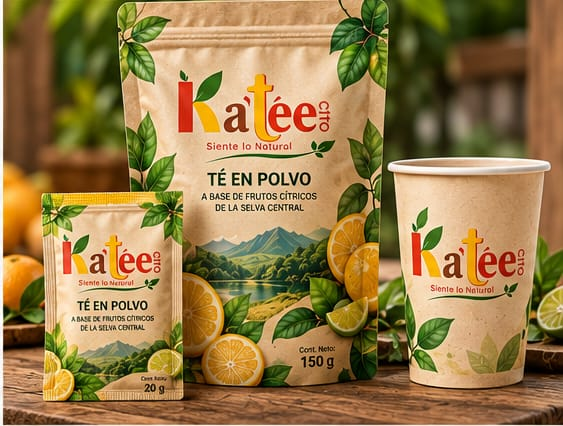
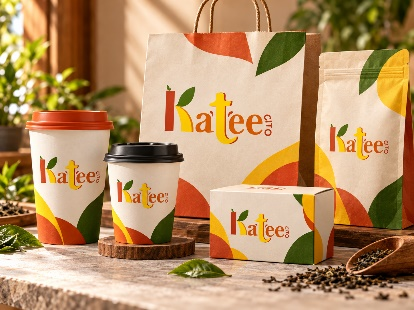
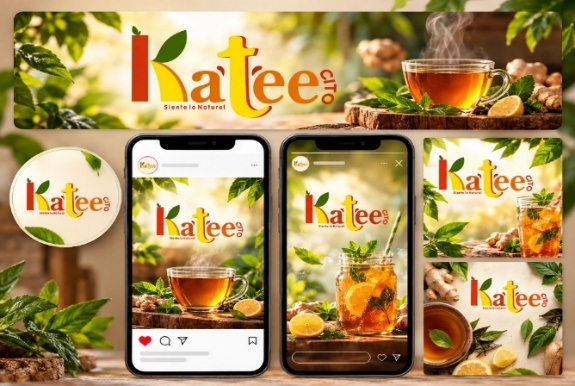

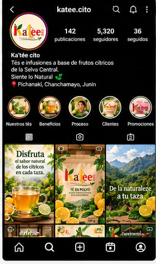
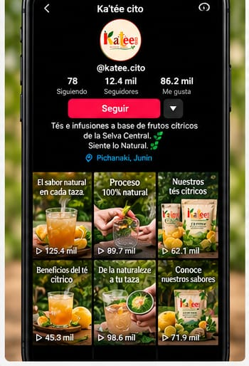
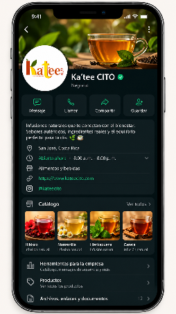
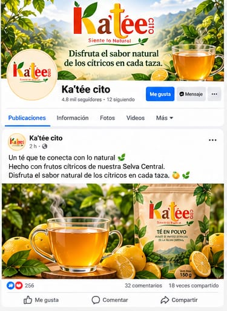